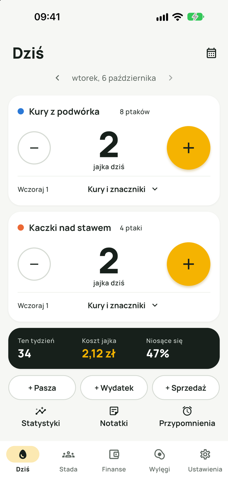
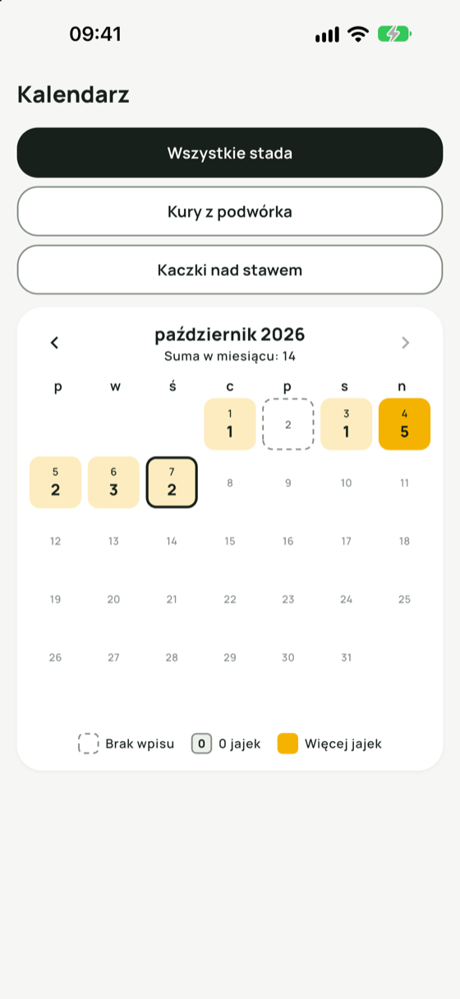
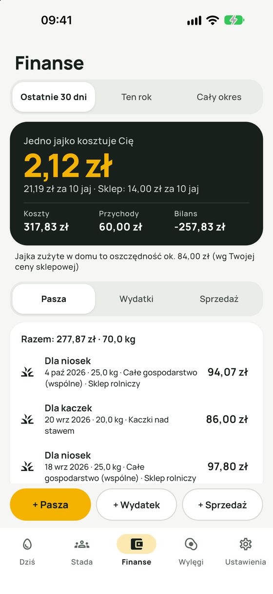
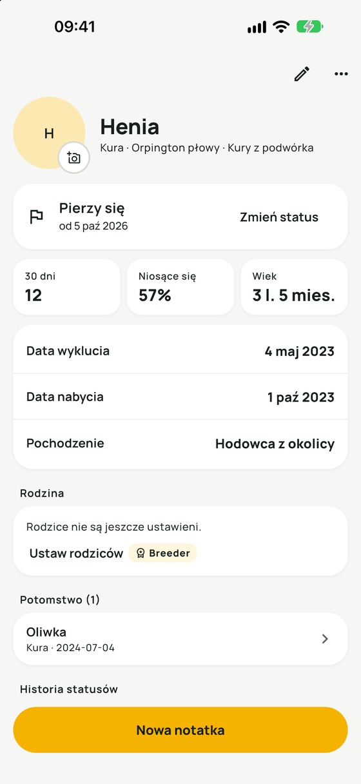
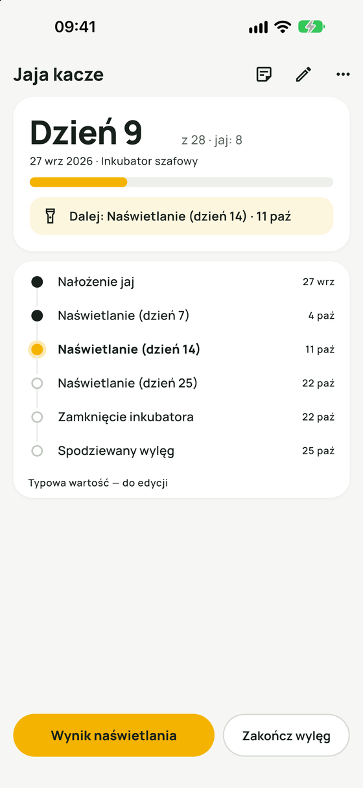
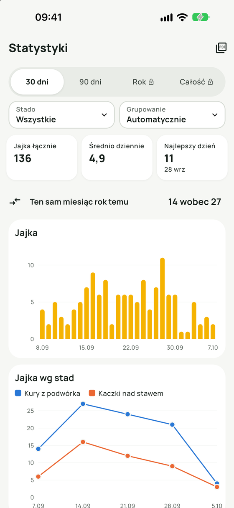
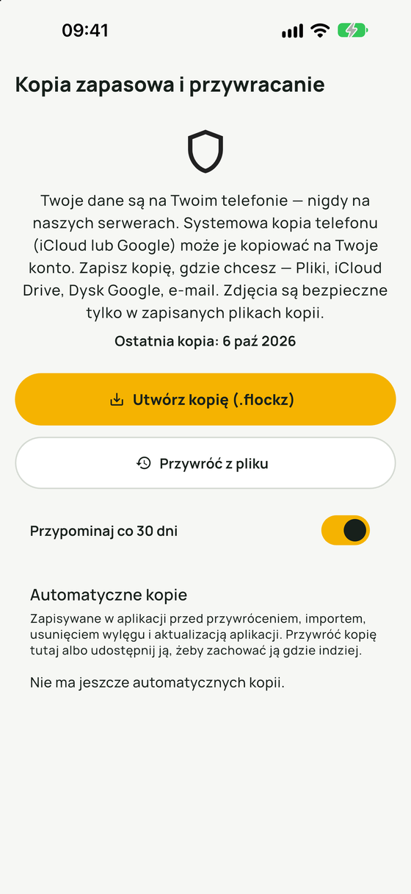

Yolkbook to licznik jajek i dziennik stada dla przydomowych kur, kaczek, przepiórek, gęsi i indyków. Dzisiejsze jajka zapiszesz dwoma dotknięciami, zobaczysz, ile kosztuje Cię jedno jajko, i zaplanujesz wylęg. Wszystkie zapiski zostają w Twoim telefonie.
Za darmo na start
Działa bez internetu
Pro płacisz raz
Wkrótce wApp StoreWkrótce wGoogle Play
Na iPhone'a, iPada i Androida. Aplikacja czeka teraz na zatwierdzenie przez Apple i Google.
Kury z podwórka8 kur
jajek dziś
Stuknij +, tak jak przy drzwiach kurnika.
Aplikacje znikają. Twoje zapiski powinny zostać.
Kiedy popularny darmowy licznik jajek zniknął z App Store, hodowcy stracili razem z nim lata zapisków o nieśności. Yolkbook jest zbudowany tak, żeby Tobie to się nie przytrafiło: nie ma konta, które można zamknąć, ani naszego serwera, który można wyłączyć.
Zapisane w telefonie
Stada, jajka, koszty, wylęgi, notatki i zdjęcia są w aplikacji na Twoim urządzeniu. Nic nie trafia do nas.
Kopia jednym dotknięciem
Zapisz jeden plik kopii w Plikach, na iCloud Drive, Dysku Google albo w e-mailu i przywróć go na dowolnym telefonie, iPhonie lub Androidzie.
Zwykłe pliki do otwarcia
Jajka, wydatki, ptaki i wylęgi wyeksportujesz do CSV dla dowolnego arkusza albo jako miesięczne i roczne raporty PDF.
Co zrobisz w Yolkbook
Sześć ekranów obejmuje codzienność małego stada, od porannego liczenia jajek po wylęg trzy tygodnie później.
Dzień zapisany dwoma dotknięciami
Ekran „Dziś” ma duży licznik dla każdego stada. Otwierasz aplikację, stukasz +, gotowe.
Widżet na ekranie głównym z +1 i −1 dla każdego stada
Opcjonalnie liczenie od każdej kury, żeby wiedzieć, która się niesie
Znaczniki jajek: dwużółtkowe, z miękką skorupką, rozbite i inne
Jajka sprzedane, oddane i zjedzone w domu

Każdy dzień miesiąca na jednym ekranie
Kalendarz zaznacza każdy dzień kolorem zależnym od liczby zebranych jajek. Dni bez wpisu wyglądają inaczej niż dni z zerem, więc łatwo uzupełnić luki.

Ile naprawdę kosztuje jajko
Paszę, ściółkę i inne wydatki wpiszesz w kilka sekund, bo aplikacja pamięta ostatni zakup. Yolkbook dzieli Twoje koszty przez liczbę jajek.
Koszt jajka i opakowania obok ceny w sklepie
Sprzedaż jajek i bieżący bilans
Sprzęt, np. nowy kurnik, liczony osobno, poza kosztem jajka
Twoja waluta i wielkość opakowania (6, 10, 12…)

Karta dla każdego ptaka
Nadaj kurom imiona i zapisuj zdjęcia, rasę, datę wyklucia i stan: niesie się, kwoczy się, pierzy się, nie niesie się. Każdy ptak ma swoją historię i własne notatki.
Notatki z datą, etykietami i zdjęciami, Twoimi słowami
Przypomnienia według Twojego planu, np. sprzątanie kurnika
Dane o lokalizacji usuwane z każdego dodanego zdjęcia

Wylęg rozpisany w kalendarzu
Nastaw jaja w inkubatorze albo pod kwoką, a Yolkbook rozpisze dni naświetlania, zamknięcie inkubatora i dzień wyklucia, z przypomnieniem przy każdym etapie.
Wylęgowość z nastawionych jaj
Wyklute pisklęta dodasz do stada jednym dotknięciem
Orientacyjne liczby dni dla sześciu gatunków, zawsze do zmiany

Wykresy i raporty pełna historia w Pro
Wykresy jajek, jajek na stado, kur niosących się, kosztu jajka, paszy na miesiąc i bilansu. Do tego porównanie z tym samym miesiącem rok temu i liczba jajek od każdej kury z imieniem.

Dla ptaków, które hodujesz
Każde stado ma swój gatunek, więc kalendarz wylęgu startuje od typowej liczby dni dla tego gatunku.
Kury
21dni do wyklucia
Kaczki
28dni do wyklucia
Kaczki piżmowe
35dni do wyklucia
Przepiórki
17dni do wyklucia
Gęsi
30dni do wyklucia
Indyki
28dni do wyklucia
Wartości orientacyjne, służą jako punkt wyjścia. Przy każdym wylęgu możesz je zmienić. Yolkbook nie udziela porad weterynaryjnych ani żywieniowych; zapisuje to, co wpiszesz.
Dane Twojego stada zostają w telefonie
Yolkbook nie ma kont ani serwerów, więc nie mamy czego od Ciebie przechowywać, sprzedawać ani zgubić.
Bez rejestracjiOtwierasz aplikację i od razu liczysz.
Bez reklam i śledzeniaAplikacja nie ma żadnej analityki.
Bez internetuŁączy się tylko ze sklepem, gdy coś kupujesz.
Kopie bezpieczeństwaPrzed każdym przywracaniem i aktualizacją aplikacja zapisuje kopię.
Systemowa kopia telefonu (iCloud albo Google) może obejmować dane aplikacji na Twoim koncie. Przeczytaj politykę prywatności.

Płacisz raz albo wcale
Wersja darmowa działa bez limitu czasu i w pełni wystarcza dla małego stada. Pro znosi limity jedną płatnością.
Darmowa
0 zł
tak długo, jak chcesz
Licznik jajek i widżet
Koszt jajka, sprzedaż i bilans
1 stado, do 6 ptaków z imieniem
1 inkubacja naraz
Statystyki z ostatnich 90 dni
Kopie zapasowe i eksport CSV
Pro
14,99 USD
jedna płatność, bez subskrypcji
Wszystko z wersji darmowej
Dowolna liczba stad i ptaków
Kilka inkubacji naraz
Cała historia w wykresach i bilansie
Miesięczne i roczne raporty PDF
Wszystkie funkcje Pro wypróbujesz za darmo przez 14 dni. Próbę uruchamiasz sam, kiedy chcesz, a po niej nic nie jest pobierane.
Breeder Pack
9,99 USD
jednorazowy dodatek
Uproszczony rodowód: matka, ojciec, potomstwo i drzewo trzech pokoleń
Historia wylęgów według inkubatora, rodziców, gatunku i roku
Karta wylęgu w PDF do sprzedaży piskląt
Pro i Breeder Pack razem: 19,99 USD.
Ceny w dolarach amerykańskich. App Store i Google Play pokażą cenę w złotych. Zakupy są przypisane do Twojego Apple ID albo konta Google i przywrócisz je na nowym telefonie.
W ośmiu językach
Aplikacja mówi w języku Twojego telefonu, razem z formatem dat, liczb i waluty.
Polski
English
Deutsch
Français
Nederlands
Svenska
Italiano
Español
Pytania hodowców
Czy mogę przenieść stare zapiski o jajkach?
Tak. Zaimportujesz dzienne liczby jajek z arkusza kalkulacyjnego albo z pliku CSV z innej aplikacji. Wystarczy kolumna z datą i liczbą jajek; kolumna ze stadem jest opcjonalna.
Czy przeniosę dane z iPhone'a na Androida i odwrotnie?
Tak. Utwórz w Ustawieniach plik kopii zapasowej, zapisz go w chmurze albo wyślij sobie e-mailem i przywróć na nowym telefonie. Plik zawiera też zdjęcia.
Kurami zajmujemy się we dwoje. Czy możemy prowadzić jedno stado?
Każdy telefon ma własne zapiski, a synchronizacji na żywo jeszcze nie ma. Możesz scalić plik kopii z drugiego telefonu; jeśli oba telefony mają wpis z tego samego dnia, zostaje nowszy.
Czy jest subskrypcja?
Nie. Wersja darmowa działa bez limitu czasu. Pro i Breeder Pack kupujesz raz.
Co się stanie po 14 dniach próby?
Aplikacja wraca do wersji darmowej. Wszystko, co wpisałeś, zostaje i możesz to dalej przeglądać i eksportować.
Czy aplikacja potrzebuje internetu?
Nie. Wszystko działa bez internetu. Aplikacja łączy się z App Store albo Google Play tylko przy zakupie lub przywracaniu zakupu.
Na jakich telefonach działa?
Na iPhonie i iPadzie z iOS 15 lub nowszym oraz na telefonach i tabletach z Androidem 7.0 lub nowszym. Interaktywny widżet na iPhonie wymaga iOS 17.
Czy Yolkbook doradza w sprawach zdrowia albo żywienia ptaków?
Nie. Yolkbook zapisuje to, co wpiszesz. Wartości orientacyjne, np. liczba dni inkubacji, są punktem wyjścia i możesz je zmienić.
Zacznij od dzisiejszych jajek
Zainstaluj Yolkbook, nazwij swoje stado i stuknij + przy pierwszym jajku. Zajmie Ci to mniej niż minutę.